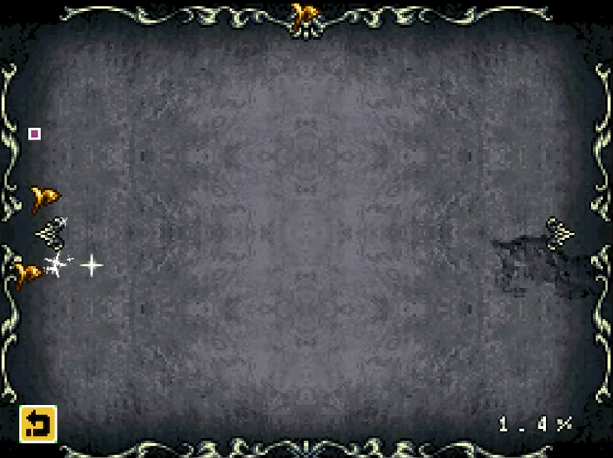
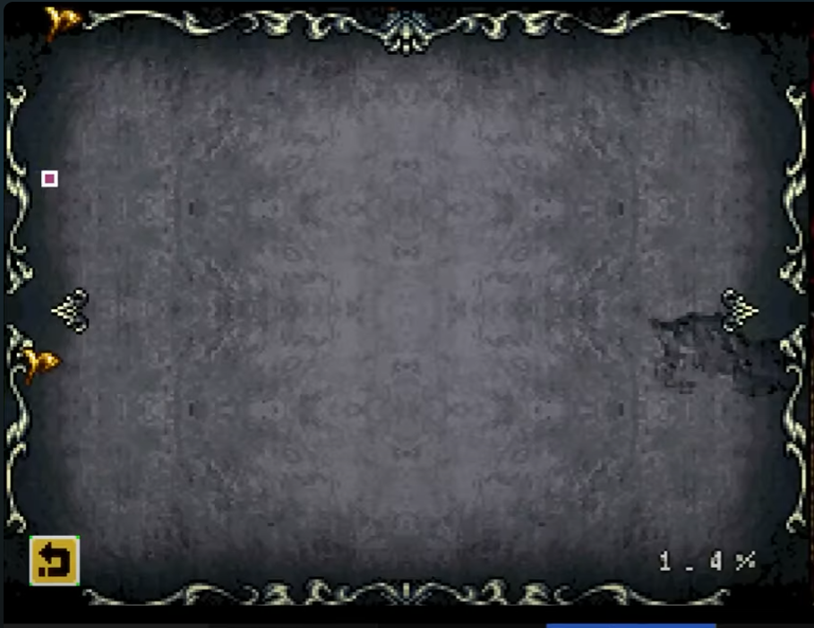
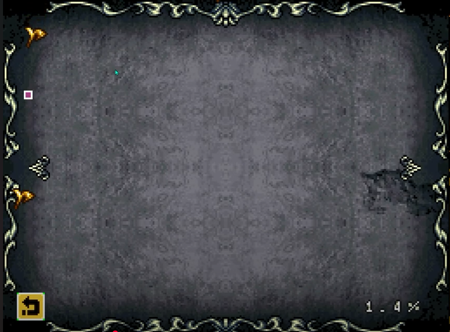

This movement is a crucial part of every Castlevania game, and Ecclesia is no exception
We have a huge variety too! Traditional jump cancels, rolling backdashes, Scutum Dashing, and most importantly Magnes Dashing
Moonwalkers make this movement even better which we see in the Magical Ticket Routes and Randomizers
This is because it extends your backdash and also provides i-frames, which if timed correctly, can give you permanent i-frames
The simplest form of backdashing and can be done as soon as the game starts
Turn around -> Backdash -> Short hop at the end -> Turn around -> Repeat
This technique is great for when you're out of MP, going up inclines, or dodging
There are almost always far better options though
From what I know, this was found by Halgorithm when they were experimenting with Dawn of Sorrow
Backdash -> Down -> Up -> Repeat
The above series of input needs to be done quick and at a steady rhythm
This is faster than jump canceling, and is great with Moonwalkers or Albus
It is easy on keyboard, and from what I've seen is possible on controller as well
This method is also very effective with the extended backdash the transformation glyphs have
This is what you're predominantly going to use before you get Magnes
Attack -> Backdash -> Repeat
This is commonly used with Confedere, and you can do the same with Albus' Agartha
For some weapons like Macir, Ascia, and Hasta, you need to alternate which hand you do the initial attack with (X or Y)
To be more technical, you backdash about 2-3 frames after the attack
Other INT based glyphs with longer animations aren't as effective to cancel
Right out of SOTN, we can Shield Dash in Ecclesia as well
Backdash -> Scutum
It's basically just like weapon canceling, but Scutum has no end lag and the animation does not persist, making it the second fastest
This is primarily used as an alternative for controller players in Glitchless or during the randomizer
The added benefit of Scutum is if you hold up at any point during your backdashes, you can use the i-frame Union simultaneously
The MP usage here is very high
This is the main form of movement in every run
Magnes + Backdash
Technically, you backdash about 1-2 frames before using Magnes, but if you mash them together it will work
You have no constraint on how fast you can mash, so in some categories, you generally want to go as fast as you can
Keep in mind however that your MP will drain faster at high mashing speeds, so in Glitchless especially it's important to be mindful of your use
It is recommended for controller players to have a keyboard on standby for this technique as it is basically free on keyboard and simultaneous bindings are banned
This is a crucial part of Ecclesia movement used in every run
When Shanoa gets hit in the air, she has prolonged i-frames that we can take advantage of with the aforementioned backdash techniques
Basically, you want to purposefully get hit while in the air to knock Shanoa in the direction you're trying to go, and then backdash through enemies in your way with the added i-frames
A good way to do this is to jump over the enemy you want to get hit by, once you cross it, turn around while still airborne and then get hit
Not only will this give you the i-frames, but the knockback will send you in the direction you want to go while also turning Shanoa around, setting her up for backdashes
You can also purposefully backdash shorthop into an enemy if you're close to one
This will knock you forward, but the shorthop shortens that distance and you can take advantage of the i-frames from there
As is Castlevania tradition, attack cancels are important for Order of Ecclesia speedruns
Generally, normal attacks are already fast enough with the basic hand swapping, so we usually aren't jump canceling like other IGAvanias
However, jump canceling can still be effective for moving while attacking or slower Glyphs
Short hop -> Attack
You can backdash to cancel attack end lag as well
Attack -> Backdash -> Down
The main damage dealer, Unions can be canceled with jumps and backdashes like attacks
Every run uses them for quick kills to some degree, so it's important to learn this
Attack + Up -> Backdash -> Jump
Since the backdash moves you away from the enemy, I like to hold forward as I do this sequence, or press forward as I am landing
Attack + Up -> Backdash -> Crouch
This is faster than the jump method since you don't have to wait for Shanoa to land
It's a bit more tricky to reposition yourself after a single sequence as incorporating the forward input might be harder
Below are examples of both tricks on different bosses, and the Glitchless run will delve into specifics
While holding forward near a Magnes pin, if you just tap Magnes (R), you can instantly shoot yourself forward
This is a minor trick that some top runners haven't implemented, but it's a good, simple timesave, especially for Glitchless Tymeo Mountains
Below are two use cases
This is crucial for the end of Glitchless and the Randomizer
With Redire and Magnes equipped: Attack + Magnes, and hold Magnes depending on how long you want magentize yourself
For basic horizontal movement, you can essentially just tap Magnes and interchange the attack button being used (X+R) -> (Y+R) -> (repeat)
For vertical movement, you want to hold Magnes as the blade rises and release Magnes at its apex
For going around ledges, you want to throw your blade under the ledge, hold magnes until it wraps around then let go once you're above it
Overall, the duration you hold Magnes varies depending on how far you want to go, the direction, and the fling strength
Important to note that regular Magnes pins take priority, so you can swing into them then fling from there
Below is a sequence vertical, horizontal, ledge movements - The Glitchless guide will show more of this
Pointed out to me by Apple, if you backdash at the start of a Redire throw, Shanoa won't be animation locked and you can freely jump, divekick, or slide during the fling
Redire + Magnes -> Backdash at the very start of the fling to preserve momentum
You generally have to do this while crouching otherwise Shanoa tends to rise from a standing Redire throw, making backdashing tricky
This is useful in Glitchless for changing your direction during the Redire segment and for the Castle entrance zip
Found by Halgorithm, this glitch allows us to use a Magical Ticket anywhere
Hover over a use item in the menu next to the Magical Ticket, press OK then the direction towards the ticket 1 frame later
This is the cornerstone of the routing involved in NMC and Any%, used to leave boss rush and cutscenes
It's a bit tricky to select the use item then hit a direction a frame later, but failing costs very little time, so just keep spamming the input sequence until you get it
Also found by Halgorithm, this involves using memory corruption in boss rush to change the physics of Shanoa, making her go absurdly fast
This is easier to explain in a video, but I will try to in text
You need to go into the Map Screen in boss rush -> move the off-screen pin ->
press left to make 5 pins appear -> select and hold the third pin ->
back out of the map screen as you hold -> enter the map screen again -> then move the pin to the correct position
There are two, crucial positions here, both leading to two different hyperspeed physics
Once activated, Shanoa will have altered physics, allowing her to zip to various positions and walk on air
You cannot save with hyperspeed active;You must use a transormation glyph to cancel it
Backdashing, sliding, attacking, and most actions that aren't moving left and right are not affected by Hyperspeed
Dragonblitz has an interview with Halgorithm explaining this in further detail, and the Any% guide will delve into this trick's uses more
The Any% section will discuss other uses of memory corruption using the pins
Below is a video showing the set up, and pictures for pin positions
Set Up + Demo:
Tristis Pixel:
Normal Speed Pixel:
Boss Rush Pixel:
Skip the first cutscene
As you move up, hold the jump button just long enough to where Shanoa does not have any added airtime before landing on each platform
Use backdash jumps to move to the center set of platforms and to reach the final door
There are a few frames after the starting text fadeout where you can instantly skip the intro cutscene, but many runners tend to not go for this
ALSO IMPORTANT: do not spam the start button to skip the cutscene, as you can risk looping them or adding extra screens showing Shanoa's death animation
If Shanoa is standing on the left side of this room, the skeletons will always spawn infront of her
Each run has its own method of doing this room, but this detail is crucial to understand for each
You generally want to be killing the first wave of skeletons close to the door, so the game thinks you're standing over a spawn point
I will go into the various methods of doing this room quickly within the respective run guides
For the categories that don't have Secare Crab Skip, this tech is useful for third phase
After the the second slam, when the claw moves down, it opens and closes once before pinching them three times with a sound effect
During that inbetween window, you want to Magnetize ALL the way to the right
Let go of right to put you at neutral, then slightly pull down to launch yourself up
You don't want to pull down too far or else the claw will hit you, but you gotta pull far enough to reach the platform
You can negate the end lag from falling by jumping as you land
Sliding off ledges is a good way to maintain speed
You can avoid the info text screen that appears when you get a Relic by leaving the room as the sound effect plays
The video will showcase this better than I can describe, but you want to Open the Chest -> Backdash to the Exit -> Slide Out
Depending on how far the exit is, you maybe need to delay the slide
There's a specific spot where you can crouch infront of her that makes Rusalka always do her hair spike
This spot also allows both of your Confedere hands to hit
The picture will show it clearer, but from the center, I tend to use the tiny rock to the left of her
I crouch in the center of that rock
You can one cycle this by standing on the left ledge where the boss door is as shown below